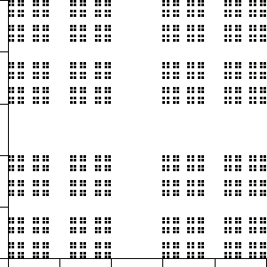
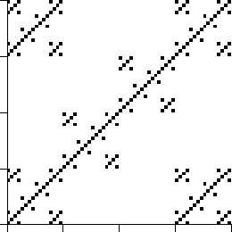
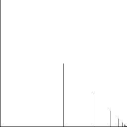
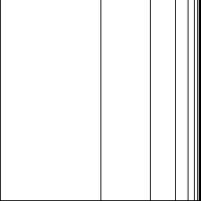

| 1. Pictured here are time series with bin boundaries indicated
by the horizontal lines. Sketch the driven IFS picture generated by these time series.
Click each image for the solution. |
|
| |
| |
| 2. Are these pictures generated by IFS with forbidden pairs? For reference, the
length 3 address boxes are shown. Click each image for the solution. |
|
| |
| |
| 3. Suppose these fractals are generated by IFS with forbidden pairs. Which, if any, of
the squares A, B, and C must be empty? Which, if any, of the squares A, B, and C must not
be empty? Click each image for the solution. |
|
| |
| 4. Box-counting dimension problems. |
| (a) Compute the box-counting dimension of the fractal shown on the right below.
To do this, first fill in the empty entries of this table.
Next, plot the points (Log(1/r), Log(N(r)).
Determine the box-counting dimension from this graph. Explain how
you used the graph to find the dimension. Here is the solution. |
| r | N(r) | 1/r | Log(1/r) | Log(N(r)) |
| .4 | 4 | 2.5 | 0.398 | 0.60 |
| .42 | 16 | 6.25 | 0.796 | 1.204 |
| .43 | | | | |
| .44 | | | | |
| .45 | | | | |
| .46 | | | | |
| |
 |
|
| |
| (b) Compute the box-counting dimension of the unit square. By this we mean the
four sides of the square, not the filled-in square. To do this, first fill in the empty
entries of this table. (If you don't see why N(1/4) = 12, draw a careful
picture of covering the sides of the unit square wit squares of side length 1/4.)
Next, plot the points (Log(1/r), Log(N(r)) in the
graph on the right. Determine the box-counting dimension from this graph. Explain how
you used the graph to find the dimension. Here is the solution. |
| r | N(r) | 1/r | Log(1/r) | Log(N(r)) |
| 1/2 | 4 | 2 | 0.30 | 0.60 |
| 1/4 | 12 | 4 | 0.60 | 1.08 |
| 1/8 | | | | |
| 1/16 | | | | |
| 1/32 | | | | |
| 1/64 | | | | |
|
| |
| (c) Compute the box-counting dimension of the fractal shown on the right below.
To do this, first fill in the empty entries of this table. Calculate three digits to the right
of the decimal.
Next, plot the points (Log(1/r), Log(N(r)).
Determine the box-counting dimension from this graph. Explain how
you used the graph to find the dimension.
Here is the solution. |
| r | N(r) | 1/r | Log(1/r) | Log(N(r)) |
| .25 | 6 | 4 | 0.604 | 0.778 |
| .252 | 36 | 16 | 1.204 | 1.556 |
| .253 | | | | |
| .254 | | | | |
| .255 | | | | |
| .256 | | | | |
|
 |
|
| |
| (d) Suppose A and B are two fractals in the plane. |
| We compute the box-counting dimension of A by covering A with
N1(A) boxes of side 1,
N1/2(A) boxes of side 1/2,
N1/4(A) boxes of side 1/4,
N1/8(A) boxes of side 1/8,
and so on. |
| The slope of the appropriate log-log plot gives the dimension d(A). |
| Now we compute the box-counting dimension of B by covering B with
N1(B) boxes of side 1,
N1/2(B) boxes of side 1/2,
N1/4(B) boxes of side 1/4,
N1/8(B) boxes of side 1/8,
and so on. |
| Suppose N1(B) = 2N1(A),
N1/2(B) = 2N1/2(A),
N1/4(B) = 2N1/4(A),
N1/8(B) = 2N1/8(A),
and so on. |
| How is d(B) related to d(A)? Here is the solution. |
| |
| (e) Find the box-counting dimension of the shape shown on the right below. The shape consists
of a horizontal segment of length 1, and vertical segments of length 1, 1/2,
1/4, 1/8, 1/16, 1/32, 1/64, ... . |
| (i) To estimate the box-counting dimension, fill in the empty entries of the table on the left below.
Calculate three digits to the right of the decimal.
Next, plot the points (Log(1/r), Log(N(r)).
Determine the box-counting dimension from this graph. Explain how
you used the graph to find the dimension. If you use only some of the points, say how you selected those you used. |
| (ii) Now calculate the box-counting dimension by finding an expression for
N(1/2n) and using the
limit formulation for the box-counting dimension. Hints. To find N(1/2n), find the number of
boxes needed to cover each line segment and then subtract the number of boxes counted twice. Recall that for any positive number r, the series
1 + r + r2 + r3 + ... + rn = (rn+1 - 1)/(r - 1). |
| (iii) Compare the results for (i) and (ii). Account for any difference. Here is the solution. |
| r | N(r) | 1/r | Log(1/r) | Log(N(r)) |
| 1/2 | 3 | 2 | 0.301 | 0.477 |
| 1/4 | 8 | 4 | 0.602 | 0.903 |
| 1/8 | | | | |
| 1/16 | | | | |
| 1/32 | | | | |
| 1/64 | | | | |
|
 |
|
| |
| (f) Find the box-counting dimension of the shape shown on the right below. The shape consists
of a horizontal segment of length 1, and vertical segments of length 1 at
x = 0, x = 1/2, x = 3/4, x = 7/8,
x = 15/16, x = 31/32, x = 63/64, ... . |
| (i) To estimate the box-counting dimension, fill in the empty entries of the table on the left below.
Calculate three digits to the right of the decimal.
Next, plot the points (Log(1/r), Log(N(r)).
Determine the box-counting dimension from this graph. Explain how
you used the graph to find the dimension. If you use only some of the points, say how you selected those you used. |
| (ii) Now calculate the box-counting dimension by finding an expression for
N(1/2n) and using the
limit formulation for the box-counting dimension. Hints. To find N(1/2n), find the number of
boxes needed to cover each line segment and then subtract the number of boxes counted twice. Recall that
limn → ∞log(n)/log(2n) = 0 |
| (iii) Compare the results for (i) and (ii). Account for any difference. Here is the solution. |
| r | N(r) | 1/r | Log(1/r) | Log(N(r)) |
| 1/2 | 4 | 2 | 0.301 | 0.602 |
| 1/4 | 13 | 4 | 0.602 | 1.114 |
| 1/8 | | | | |
| 1/16 | | | | |
| 1/32 | | | | |
| 1/64 | | | | |
|
 |
|